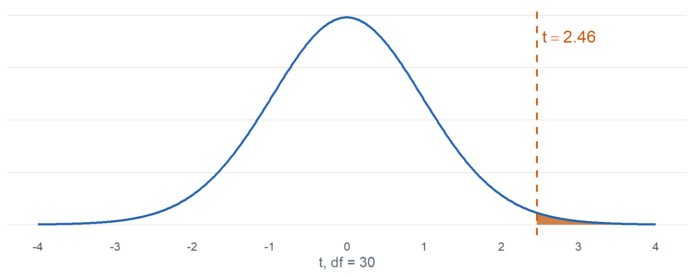
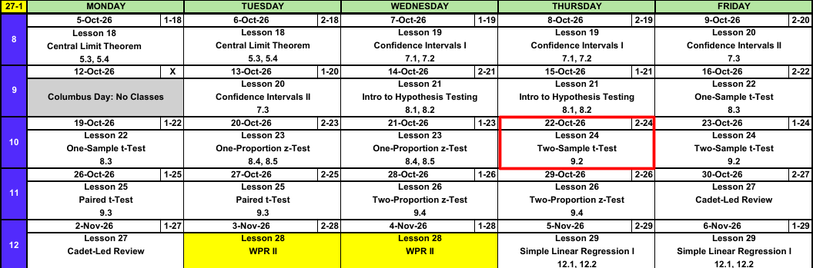

Lesson 24: Two-Sample t-Test
Calendar

Admin: TEE Slots
All TEE periods run 0730 to 1100. Find your name under your section.
NoteMA206 B2 114 (15 cadets)
| P1: Tue 15 Dec (8) | P7: Thu 17 Dec (4) | P10: Fri 18 Dec (3) |
|---|---|---|
| Burke | Albus | Jenkins |
| Ewers | Buseck | Marsh |
| Ford | DeLucia | Matin |
| Moon | Suarez | |
| Quijije | ||
| Smith | ||
| Thomazini | ||
| Walenciak |
NoteMA206 C2 115 (18 cadets)
| P1: Tue 15 Dec (13) | P7: Thu 17 Dec (1) | P10: Fri 18 Dec (4) |
|---|---|---|
| Baka | Cotterill | Brand |
| Ben-Adi | Deitrick | |
| Blind | Nelson | |
| Cooper | Ok | |
| Gillis | ||
| Hobaugh | ||
| Kang | ||
| Kemp | ||
| Lewis | ||
| Liquard | ||
| Murillo | ||
| Rathnam | ||
| Youn |
NoteMA206 D2 116 (18 cadets)
| P1: Tue 15 Dec (7) | P7: Thu 17 Dec (5) | P10: Fri 18 Dec (6) |
|---|---|---|
| Blanchard | Damodar | Banzuela |
| Caltrider | Kyle | Hackett |
| Gonzalez | Mladenovic | Johnson |
| Liu | Persteins | McInelly |
| Momoh | Srisukwattananan | Rodriguez |
| Owen | Zimmer | |
| Pezzutti |
Warm-Up
Swim Test
Historically \(80\%\) of new cadets pass the swim test on the first attempt. In a random sample of \(160\) new cadets from the Class of 2030, \(118\) passed on the first attempt. Is the pass rate lower? Test at \(\alpha = 0.05\).
TipAnswer
1. Hypotheses: \(H_0: p = 0.80\) versus \(H_a: p < 0.80\). \(p\) is the true proportion of all Class of 2030 new cadets who pass the swim test on the first attempt.
2. Conditions: Random sample. \(np_0 = 160(0.80) = 128 \ge 10\) and \(n(1 - p_0) = 160(0.20) = 32 \ge 10\).
3. Test statistic:
\[\hat{p} = \frac{118}{160} = 0.7375, \qquad z = \frac{0.7375 - 0.80}{\sqrt{0.80(0.20)/160}} = \mathbf{-1.98}\]
4. P-value: \(P(Z \le -1.98) = \mathbf{0.0241}\). pnorm(-1.976)
5. Decision: \(0.0241 \le 0.05\). Reject \(H_0\).
6. Conclusion: At the 5% level there is sufficient evidence that the true proportion of all Class of 2030 new cadets who pass the swim test on the first attempt is less than 0.80.
What We Did: Lessons 18 to 23
NoteReview: Central Limit Theorem (Lesson 18)
- \(\bar{X} \sim N\left(\mu,\ \left(\dfrac{\sigma}{\sqrt{n}}\right)^2\right)\), approximately, for \(n > 40\)
- Normal population: exact for any \(n\)
pnorm(x, mu, sigma/sqrt(n))- \(\hat{p} \sim N\left(p,\ \dfrac{p(1-p)}{n}\right)\), approximately, when \(np \ge 10\) and \(n(1-p) \ge 10\)
NoteReview: Confidence Intervals I (Lesson 19)
- \(\text{estimate} \pm \text{critical value} \times \text{standard error}\)
- Mean, \(n > 40\): \(\bar{x} \pm z_{\alpha/2}\,\dfrac{s}{\sqrt{n}}\)
- Proportion, \(n\hat{p} \ge 10\) and \(n(1-\hat{p}) \ge 10\): \(\hat{p} \pm z_{\alpha/2}\sqrt{\dfrac{\hat{p}(1-\hat{p})}{n}}\)
qnorm(0.975)for 95%,qnorm(0.95)for 90%,qnorm(0.995)for 99%- 95% confident describes the method
NoteReview: Confidence Intervals II (Lesson 20)
- Small sample, normal population: \(\bar{x} \pm t_{\alpha/2,\,n-1}\,\dfrac{s}{\sqrt{n}}\)
- \(\text{df} = n - 1\),
qt(0.975, n - 1)for 95% - \(t_{\alpha/2,\,n-1} > z_{\alpha/2}\), so the \(t\) interval is wider
- Sample size for width \(w\): \(n = \left(\dfrac{2\,z_{\alpha/2}\,\sigma}{w}\right)^2\), rounded up
NoteReview: Intro to Hypothesis Testing (Lesson 21)
- \(H_0: \mu = \mu_0\) versus \(H_a\): \(\mu < \mu_0\), \(\mu > \mu_0\), or \(\mu \ne \mu_0\)
- \(z = \dfrac{\bar{x} - \mu_0}{s/\sqrt{n}}\), random sample, \(n > 40\)
- P-value:
pnorm(z),1 - pnorm(z),2 * pnorm(-abs(z)) - Reject \(H_0\) if the P-value is at or below \(\alpha\), otherwise fail to reject
- Type I: reject a true \(H_0\) (\(\alpha\)). Type II: fail to reject a false \(H_0\) (\(\beta\))
- Fail to reject is not accept
NoteReview: One-Sample t-Test (Lesson 22)
- \(t = \dfrac{\bar{x} - \mu_0}{s/\sqrt{n}}\), \(\text{df} = n - 1\)
- Random sample, \(n \le 40\), population approximately normal
- P-value:
pt(t, n - 1),1 - pt(t, n - 1),2 * pt(-abs(t), n - 1) t.test(x, mu = mu0, alternative = "two.sided")
NoteReview: One-Proportion z-Test (Lesson 23)
- \(z = \dfrac{\hat{p} - p_0}{\sqrt{p_0(1 - p_0)/n}}\)
- Random sample, \(np_0 \ge 10\) and \(n(1 - p_0) \ge 10\)
- The test uses \(p_0\), the interval uses \(\hat{p}\)
- Statistically significant does not mean practically significant
What We’re Doing: Lesson 24
Objectives
- Distinguish independent-sample from paired designs. (SLO 3)
- State and check the assumptions of the two-sample \(t\) test. (SLO 5)
- Carry out the two-sample \(t\) test for \(\mu_1 - \mu_2\) using the approximate degrees of freedom. (SLO 5)
- Construct and interpret a confidence interval for \(\mu_1 - \mu_2\). (SLO 5)
- Interpret two-sample \(t\)-test output from statistical software and draw a conclusion in context. (SLO 4, 5, 1)
- Translate a directional research claim into the correct one-sided alternative. (SLO 5, 6)
Required Reading
Devore 9.2
The Takeaway for Today
NoteKey Concepts from Lesson 24
- Test statistic: \(t = \dfrac{(\bar{x}_1 - \bar{x}_2) - \Delta_0}{\sqrt{s_1^2/n_1 + s_2^2/n_2}}\), with approximate df \(\nu\), rounded down
- Conditions: two independent random samples, both populations approximately normal (or both \(n > 40\))
- Interval: \((\bar{x}_1 - \bar{x}_2) \pm t_{\alpha/2,\,\nu}\sqrt{s_1^2/n_1 + s_2^2/n_2}\)
- Directional claim: decide which group is 1, then the claim goes in \(H_a\)
- Independent vs. paired: two separate groups, or two measurements on the same units
Independent or Paired?
ImportantTwo Designs
- Independent samples: two separate groups. No individual in one sample is linked to an individual in the other. Sample sizes can differ. Today.
- Paired: each observation in one sample is matched to one in the other (same cadet twice, twins, left and right hand). \(n_1 = n_2\). Lesson 25.
Which design?
- ACFT scores of \(20\) cadets in June and again in August.
- ACFT scores of \(20\) cadets from 1st Regiment and \(25\) from 4th Regiment.
- \(30\) cadets randomly assigned, \(15\) to each of two marksmanship courses.
- Grip strength of the left and right hand of \(25\) cadets.
TipAnswer
Paired. Same cadets twice.
Independent. Two separate groups.
Independent. Random assignment makes two separate groups.
Paired. Two hands on the same cadet.
Two-Sample \(t\) Test
ImportantTwo-Sample \(t\) Test for \(\mu_1 - \mu_2\)
\[t = \frac{(\bar{x}_1 - \bar{x}_2) - \Delta_0}{\sqrt{\dfrac{s_1^2}{n_1} + \dfrac{s_2^2}{n_2}}}\]
\[\nu = \frac{\left(\dfrac{s_1^2}{n_1} + \dfrac{s_2^2}{n_2}\right)^2}{\dfrac{(s_1^2/n_1)^2}{n_1 - 1} + \dfrac{(s_2^2/n_2)^2}{n_2 - 1}}, \quad \text{round down}\]
- Hypotheses: \(H_0: \mu_1 - \mu_2 = \Delta_0\) versus \(H_a\): \(\mu_1 - \mu_2 > \Delta_0\), \(< \Delta_0\), or \(\ne \Delta_0\). Usually \(\Delta_0 = 0\).
- Conditions: two independent random samples; both populations approximately normal, or both \(n > 40\)
- If \(H_0\) is true, \(T \sim t_\nu\), approximately
| \(H_a\) | P-value |
|---|---|
| \(\mu_1 - \mu_2 > \Delta_0\) | 1 - pt(t, nu) |
| \(\mu_1 - \mu_2 < \Delta_0\) | pt(t, nu) |
| \(\mu_1 - \mu_2 \ne \Delta_0\) | 2 * pt(-abs(t), nu) |
ImportantConfidence Interval for \(\mu_1 - \mu_2\)
\[(\bar{x}_1 - \bar{x}_2) \pm t_{\alpha/2,\,\nu}\sqrt{\frac{s_1^2}{n_1} + \frac{s_2^2}{n_2}}\]
- Same conditions and same \(\nu\) as the test
- Interval contains \(0\): no evidence of a difference. All positive: \(\mu_1 > \mu_2\). All negative: \(\mu_1 < \mu_2\).
Directional Claims
WarningClaim to \(H_a\)
- Name group 1 and group 2.
- Write the claim as a statement about \(\mu_1 - \mu_2\).
- The claim goes in \(H_a\). “Higher,” “more,” “longer” for group 1 means \(> 0\). “Lower,” “less,” “faster” for group 1 means \(< 0\). “Different” means \(\ne 0\).
- Swap the groups and the sign flips.
Claim: firsties sleep more than plebes.
TipAnswer
Group 1 = firsties, group 2 = plebes: \(H_a: \mu_1 - \mu_2 > 0\).
Group 1 = plebes, group 2 = firsties: \(H_a: \mu_1 - \mu_2 < 0\).
Same claim either way. Pick an order and keep it through the conclusion.
The Steps
Sleep
Random samples of firsties and plebes recorded hours of sleep on a weeknight. Do firsties sleep more? Test at \(\alpha = 0.05\).
| Group | \(n\) | \(\bar{x}\) (hr) | \(s\) (hr) |
|---|---|---|---|
| 1: Firsties | 15 | 6.6 | 0.9 |
| 2: Plebes | 18 | 5.7 | 1.2 |
1. Hypotheses: State \(H_0\) and \(H_a\).
TipAnswer
\[H_0: \mu_1 - \mu_2 = 0\]
\[H_a: \mu_1 - \mu_2 > 0\]
\(\mu_1\) and \(\mu_2\) are the true mean weeknight hours of sleep of all firsties and all plebes.
2. Conditions: What conditions allow us to do this?
TipAnswer
Two independent random samples. Both samples are small (\(n \le 40\)), so both populations must be approximately normal. Check with a histogram or normal probability plot of each sample.
3. Test statistic: Compute \(t\) and \(\nu\).
TipAnswer
\[t = \frac{6.6 - 5.7}{\sqrt{\dfrac{0.9^2}{15} + \dfrac{1.2^2}{18}}} = \frac{0.90}{0.3661} = \mathbf{2.46}\]
\[\nu = \frac{\left(0.0540 + 0.0800\right)^2}{\dfrac{0.0540^2}{14} + \dfrac{0.0800^2}{17}} = 30.71, \text{ round down to } \mathbf{30}\]
4. P-value: Find it.
TipAnswer
\[P(T \ge 2.46) = \mathbf{0.0100}\]
1 - pt(2.459, 30)
5. Decision: Reject or fail to reject?
TipAnswer
\(0.0100 \le 0.05\). Reject \(H_0\).
6. Conclusion: State it in context.
TipAnswer
Since the P-value \(0.0100 \le \alpha = 0.05\), reject \(H_0\). At the 5% level there is sufficient evidence that the true mean weeknight sleep of all firsties is greater than that of all plebes.
Confidence interval: Build a 95% interval for \(\mu_1 - \mu_2\) and interpret it.
TipAnswer
\(t_{0.025,\,30} = 2.042\). qt(0.975, 30)
\[0.90 \pm 2.042(0.3661) = (0.15,\ 1.65)\]
We are 95% confident that firsties sleep, on average, between 0.15 and 1.65 hours more per weeknight than plebes. All positive, consistent with rejecting \(H_0\).
In R
ACFT scores from random samples of cadets in two regiments. Is there a difference in mean score?
Welch Two Sample t-test
data: reg1 and reg2
t = 2.2633, df = 18.293, p-value = 0.036
alternative hypothesis: true difference in means is not equal to 0
95 percent confidence interval:
2.218816 58.714518
sample estimates:
mean of x mean of y
480.3000 449.8333 - R’s header line names the method: this is our two-sample \(t\) with approximate df
alternative:"two.sided","greater", or"less", always for \(\mu_1 - \mu_2\) with the first vector as group 1- R does not round \(\nu\) down, so its P-value is slightly smaller than the hand calculation with 18 df
What do you conclude at \(\alpha = 0.05\)?
TipAnswer
\(t = 2.26\), \(\nu = 18.29\), P-value \(= 0.0360 \le 0.05\). Reject \(H_0\).
At the 5% level there is sufficient evidence that the true mean ACFT scores of the two regiments differ. We are 95% confident that 1st Regiment averages between 2.22 and 58.71 points higher than 4th Regiment.
Inference Procedures
| Parameter | Conditions | Test statistic | Confidence interval | Critical value | P-value by \(H_a\) |
|---|---|---|---|---|---|
| \(\mu\) \(\sigma\) known, or \(\sigma\) unknown and \(n > 40\) |
Random sample \(\sigma\) known and population normal, or \(n > 40\) |
\(z = \dfrac{\bar{x} - \mu_0}{\sigma/\sqrt{n}}\) use \(s\) for \(\sigma\) when \(n > 40\) |
\(\bar{x} \pm z_{\alpha/2}\dfrac{\sigma}{\sqrt{n}}\) | qnorm(1-a/2) |
\(>\) 1-pnorm(z)\(<\) pnorm(z)\(\ne\) 2*pnorm(-abs(z)) |
| \(\mu\) \(\sigma\) unknown, \(n \le 40\) |
Random sample Population approx. normal |
\(t = \dfrac{\bar{x} - \mu_0}{s/\sqrt{n}} \sim t_{n-1}\) | \(\bar{x} \pm t_{\alpha/2,\,n-1}\dfrac{s}{\sqrt{n}}\) | qt(1-a/2,n-1) |
\(>\) 1-pt(t,n-1)\(<\) pt(t,n-1)\(\ne\) 2*pt(-abs(t),n-1) |
| \(p\) | Random sample \(np_0 \ge 10\) \(n(1-p_0) \ge 10\) |
\(z = \dfrac{\hat{p} - p_0}{\sqrt{p_0(1-p_0)/n}}\) the test uses \(p_0\) |
\(\hat{p} \pm z_{\alpha/2}\sqrt{\dfrac{\hat{p}(1-\hat{p})}{n}}\) the interval uses \(\hat{p}\) |
qnorm(1-a/2) |
\(>\) 1-pnorm(z)\(<\) pnorm(z)\(\ne\) 2*pnorm(-abs(z)) |
| \(\mu_1 - \mu_2\) independent |
Two independent samples Both normal, or both \(n > 40\) |
\(t = \dfrac{(\bar{x}_1 - \bar{x}_2) - \Delta_0}{\sqrt{s_1^2/n_1 + s_2^2/n_2}} \sim t_{\nu}\) | \((\bar{x}_1 - \bar{x}_2) \pm t_{\alpha/2,\,\nu}\sqrt{\dfrac{s_1^2}{n_1}+\dfrac{s_2^2}{n_2}}\) | qt(1-a/2,nu) |
\(>\) 1-pt(t,nu)\(<\) pt(t,nu)\(\ne\) 2*pt(-abs(t),nu) |
| \(\mu_D\) paired |
|||||
| \(p_1 - p_2\) |
Board Problems
Problem 1: Independent or Paired?
NoteQuestions
For each, is the design independent samples or paired?
\(12\) cadets shoot a qualification table with iron sights, then the same \(12\) shoot it with an optic.
Mean GPA of a random sample of \(40\) corps squad athletes and a random sample of \(40\) non-athletes.
\(18\) sets of twins, one twin of each set assigned to a new study method.
\(50\) cadets randomly split into two equal groups, one with a new ruck, one with the old.
TipAnswers
Paired. Same cadets twice.
Independent. Equal sample sizes do not make it paired. Nothing links athlete \(i\) to non-athlete \(i\).
Paired. Each twin is matched to the other.
Independent. Two separate groups.
Problem 2: Claim to \(H_a\)
NoteQuestions
Write \(H_a\) for each claim. Group 1 is listed first.
Cadets who eat breakfast (1) score higher on WPRs than cadets who skip it (2).
The new boot (1) reduces mean ruck time compared to the old boot (2).
Mean 2 mile run time differs between men (1) and women (2) in the Class of 2029.
Same claim as (a), but group 1 is the cadets who skip breakfast.
TipAnswers
\(H_a: \mu_1 - \mu_2 > 0\)
\(H_a: \mu_1 - \mu_2 < 0\). Reduces time means group 1 is lower.
\(H_a: \mu_1 - \mu_2 \ne 0\)
\(H_a: \mu_1 - \mu_2 < 0\). Same claim, groups swapped, sign flipped.
Problem 3: Optics
Random samples of cadets fired the M4 qualification table, one group with a new optic and one with iron sights. Does the optic raise the mean score? Test at \(\alpha = 0.05\).
| Group | \(n\) | \(\bar{x}\) (hits) | \(s\) (hits) |
|---|---|---|---|
| 1: Optic | 14 | 34.2 | 3.1 |
| 2: Iron sights | 16 | 31.5 | 4 |
NoteQuestions
State the hypotheses.
State the conditions.
Compute \(t\) and \(\nu\).
Find the P-value.
Decide and conclude.
Build and interpret a 95% interval for \(\mu_1 - \mu_2\).
TipAnswers
- \[H_0: \mu_1 - \mu_2 = 0\]
\[H_a: \mu_1 - \mu_2 > 0\]
\(\mu_1\) and \(\mu_2\) are the true mean scores of all cadets firing with the optic and with iron sights.
Two independent random samples. Both \(n \le 40\), so both populations approximately normal.
\[t = \frac{34.2 - 31.5}{\sqrt{\dfrac{3.1^2}{14} + \dfrac{4^2}{16}}} = \mathbf{2.08}\]
\[\nu = 27.64, \text{ round down to } \mathbf{27}\]
- \[P(T \ge 2.08) = \mathbf{0.0236}\]
1 - pt(2.079, 27)
Since the P-value \(0.0236 \le \alpha = 0.05\), reject \(H_0\). At the 5% level there is sufficient evidence that the true mean score with the optic is greater than with iron sights.
\(t_{0.025,\,27} = 2.052\).
\[2.70 \pm 2.052(1.2986) = (0.04,\ 5.36)\]
We are 95% confident that the optic raises the mean score by between 0.04 and 5.36 hits.
Problem 4: Read the Output
IOCT times (minutes) for a random sample of cadets with prior gymnastics experience (gym) and a random sample without (nogym).
Welch Two Sample t-test
data: gym and nogym
t = -1.5853, df = 15.99, p-value = 0.1325
alternative hypothesis: true difference in means is not equal to 0
95 percent confidence interval:
-0.6055027 0.0873830
sample estimates:
mean of x mean of y
3.555556 3.814615
NoteQuestions
What are \(H_0\) and \(H_a\)?
Report \(\bar{x}_1 - \bar{x}_2\), \(t\), \(\nu\), and the P-value.
Decide at \(\alpha = 0.05\) and conclude in context.
Interpret the confidence interval.
The claim was that gymnasts are faster. What is \(H_a\), and what is the P-value?
TipAnswers
\(H_0: \mu_1 - \mu_2 = 0\) versus \(H_a: \mu_1 - \mu_2 \ne 0\). Group 1 is
gym.\(\bar{x}_1 - \bar{x}_2 = 3.556 - 3.815 = -0.259\), \(t = -1.59\), \(\nu = 15.99\), P-value \(= 0.1325\).
\(0.1325 > 0.05\). Fail to reject \(H_0\). At the 5% level there is insufficient evidence that the true mean IOCT times of cadets with and without gymnastics experience differ.
We are 95% confident that \(\mu_1 - \mu_2\) is between -0.61 and 0.09 minutes. The interval contains \(0\), so no evidence of a difference.
Faster means lower time for group 1: \(H_a: \mu_1 - \mu_2 < 0\). \(t\) is negative, so the P-value is half the two-sided one: \(0.1325 / 2 = 0.0662\). Or rerun with
alternative = "less". Still above \(0.05\): fail to reject.
Before You Leave
Today
- Independent samples: two separate groups. Paired: matched units.
- \(t = \dfrac{(\bar{x}_1 - \bar{x}_2) - \Delta_0}{\sqrt{s_1^2/n_1 + s_2^2/n_2}}\), approximate df \(\nu\), rounded down
- Interval: \((\bar{x}_1 - \bar{x}_2) \pm t_{\alpha/2,\,\nu}\sqrt{s_1^2/n_1 + s_2^2/n_2}\)
- Name group 1 first, then put the claim in \(H_a\)
t.test(x1, x2, alternative = "greater")
Any questions?
Next Lesson
Lesson 25: Paired t-Test
- Identify paired data and the appropriate paired design
- Carry out the paired \(t\) test for a mean difference
- Construct and interpret a confidence interval for a mean difference
Reading: Devore 9.3
Upcoming Graded Events
- WebAssign 9.2: due at the start of Lesson 25
- WPR II: Lesson 28 (covers Lessons 18-26)
- TEE: 15-18 Dec 2026